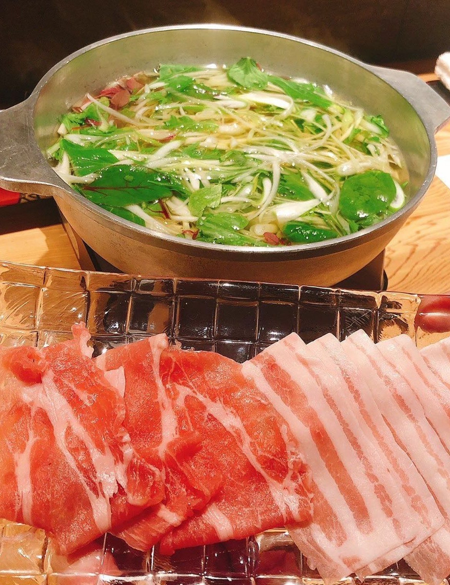

出汁の香る豚しゃぶ
つけダレいらず、お出汁が香ります。クチコミにも「美味しかったのはしゃぶしゃぶでした」とのお声をいただきました。
NIKUDOKORO KISHIN — KAMIFUKUOKA
短角牛の赤身と、旬の野菜。
上福岡駅北口の路地にある、大人の隠れ家です。
18:00〜23:30｜日曜定休｜コースはご予約を
ABOUT
上福岡駅の北口を降りて、左手の路地へ。黒を基調にした店内に、テーブル席とカウンター席が並びます。ふだんはご予約のコース料理が主ですが、ご予約のない日は居酒屋としても営業しています。
お肉は北海道足寄の短角牛。和牛のなかでも「およそ2%以下で大変レアな牛肉です」。脂の少ない赤身で、噛むほどにお肉の旨味が広がります。北海道森町のSPFひこま豚と、全国各地の旬の野菜を合わせて、コース仕立てでお出ししています。
路地の一軒、大人の隠れ家。
SHOP INFO
| 店名 | 肉処 喜心 （にくどころ きしん） |
|---|---|
| 住所 | 埼玉県ふじみ野市 上福岡1-8-8 NKビル 1F-A |
| アクセス | 東武東上線 上福岡駅 北口から徒歩約1分 |
| 営業時間 | 18:00〜23:30 |
| 定休日 | 日曜 |
| 電話 | 049-265-5141 |
| ご予約 | コース料理は事前のご予約を承っています |
CONTACT
ご予約・お問い合わせは、お電話で承っています。Instagramのメッセージからも、ご予約・ご質問を賜ります。